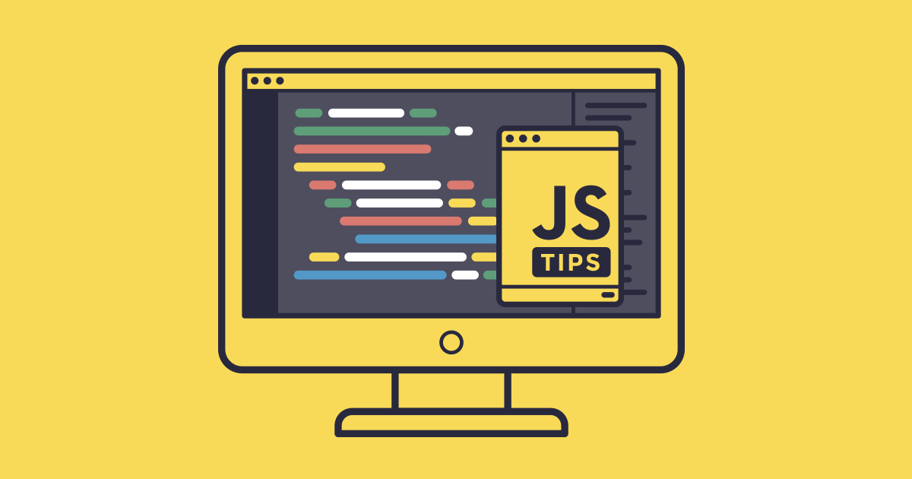

Tips que debes considerar

- Es importante que entiendas cómo funcionan las variables en JavaScript, especialmente la diferencia entre var, let, y const, ya que cada una tiene reglas diferentes sobre dónde pueden ser utilizadas en tu código.
- Aprende a usar las funciones de flecha (=>), ya que ofrecen una manera más concisa de escribir funciones y manejan el contexto (this) de forma distinta a las funciones tradicionales.
- JavaScript es conocido por su capacidad de manejar tareas asíncronas. Domina el uso de async y await para trabajar con promesas, lo que hará que tu código sea más legible y eficiente en operaciones como llamadas a APIs.
- El Document Object Model (DOM) es clave en la creación de páginas web dinámicas. Aprende a seleccionar, modificar y manejar elementos HTML usando métodos como querySelector, appendChild, y addEventListener.
- Siempre maneja posibles errores en tu código usando try, catch, y finally. Esto te ayudará a crear aplicaciones más robustas y evitar que fallos inesperados rompan tu programa.